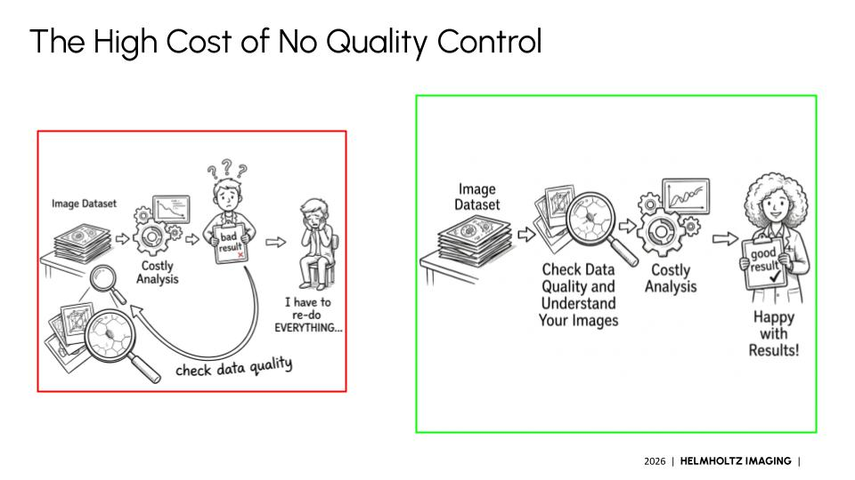

Hidden quality issues - artifacts, inconsistencies, signal drift, batch effects - can silently undermine your analysis. They are easy to miss and hard to fix after the fact. Discovering them early, before you invest weeks in a pipeline, changes everything.
These are not edge cases. Most real imaging datasets contain at least one of the issues below - and many contain several. They don't always invalidate your analysis, but knowing they exist shapes how you design it, how you interpret results, and how carefully you draw conclusions.
Signal too faint or too close to background. Subtle but can bias segmentation and quantification.
Excessive photon noise, readout noise, or structured noise patterns that obscure biological signal.
JPEG or lossy compression introduces blocky patterns and ringing that can be mistaken for structure.
Visible seams, intensity jumps, or misalignments at tile boundaries in large mosaic images.
Dust, debris, or foreign objects on the sample or optics that appear consistently across images.
Intensity changes over time or across Z-slices due to photobleaching, focus drift, or instrument instability.
Systematic intensity or quality differences between acquisition sessions that can confound group comparisons.
Files with unexpected sizes, missing Z-slices, or truncated time series that silently break downstream pipelines.

Without data quality checks, issues surface late - often only after months of analysis. By then, experiments may need to be repeated, results re-examined, and conclusions revisited. The cost is not just time: it is confidence in your science.
With prevalidation, problems are caught before the expensive step. A small investment of time before analysis can save a large investment of time after.
Imagine prevalidating just a small test dataset before a large-scale imaging run - you might discover ways to optimize your protocol for much better images.
Prevalidation is not a one-time step. Each stage of your imaging workflow is an opportunity to catch problems before they compound.
Run on a small test dataset first. You may discover protocol optimizations - exposure, focus, staining concentration - that improve the entire subsequent acquisition.
Validate the complete dataset before committing to analysis. Verify consistency across batches, conditions, and time points - and that nothing was missed or corrupted.
After denoising, registration, segmentation, or any transformation - run Pixel Patrol again to confirm quality was preserved and no new artifacts were introduced.
Invest the time to understand your dataset's nuances, strengths, and limitations. Conclusions are genuinely supported by data only when you understand what that data actually is.
Pixel Patrol is the tool that makes this possible at scale - automatically, across hundreds or thousands of images, with a shareable report you can discuss with your team.
About Pixel Patrol
Documentation